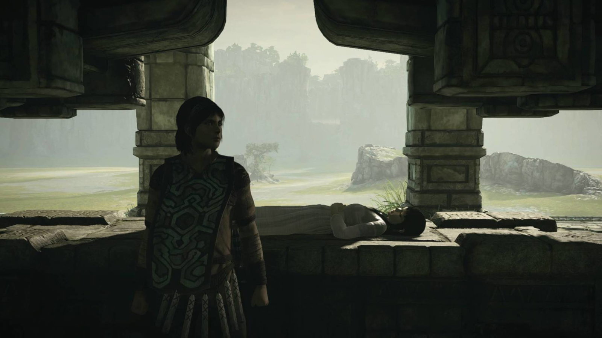

Uma presença constante
Enquanto Wander se transforma ao longo da aventura, Mono permanece no altar. O contraste acompanha cada retorno ao santuário.

01 / O início de tudo
Wander leva o corpo de Mono até o Santuário da Adoração, nas Terras Proibidas. Diante do altar, pede a Dormin que devolva a vida à jovem.
A entidade apresenta uma condição: derrotar os dezesseis colossos. Mono permanece no santuário enquanto Wander parte com Agro para cumprir essa tarefa.
Entre as batalhas, o altar lembra o motivo da viagem. Mono não participa dos confrontos, mas a tentativa de trazê-la de volta orienta as escolhas de Wander.
02 / Antes das Terras Proibidas
Segundo Wander, Mono foi sacrificada por ser considerada portadora de um destino amaldiçoado. O jogo não explica esse destino nem mostra as circunstâncias de sua morte.
Sua infância, família e vida anterior permanecem desconhecidas. A natureza exata de sua relação com Wander também não é definida.
O jogo não confirma que sejam namorados ou parentes. Essas possibilidades são interpretações, não fatos estabelecidos.
03 / A aparência
Mono tem cabelos escuros e usa um vestido longo de cor clara. Sua roupa contrasta com a pedra e as sombras do santuário.
Durante a maior parte da história, ela aparece deitada no altar, imóvel e de olhos fechados. A composição destaca seu rosto, suas mãos e o tecido sobre a superfície de pedra.
04 / Depois dos gigantes
No final, Mono desperta no altar. Agro retorna ao santuário mancando e se aproxima dela.
Na fonte esvaziada, Mono encontra um bebê com pequenos chifres. Ela o acolhe nos braços e segue Agro até o jardim no alto do santuário.
A história termina com os três entre a vegetação e os animais daquele lugar. O jogo não revela como será a vida de Mono depois desse encontro.
Conheça o outro lado da jornada ↗05 / Detalhes para observar
Enquanto Wander se transforma ao longo da aventura, Mono permanece no altar. O contraste acompanha cada retorno ao santuário.
O passado de Mono fica fora de cena. Essa ausência abre espaço para interpretações, sem confirmar sua origem.
Ao pegar o bebê nos braços, Mono passa da imobilidade à ação. O encerramento a mostra cuidando de uma nova vida.
As lacunas sobre o passado de Mono e seu vínculo com Wander foram preservadas. Teorias de fãs não são apresentadas como fatos.